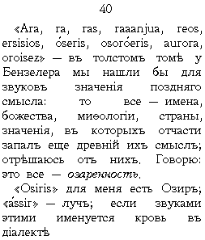
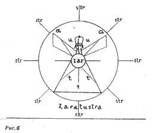
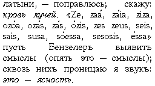

Glossolalia (Section 40)
GLOSSOLALIA

"Ara, Ra, Ras, Razaria, Renos, Ersilios, Oseris, Osoreris, Aurora, Oroisez" -- in the thick tome of Benseler we can find for these sounds the signifiers of later thought: they are all -- proper names, deities, mythologies, countries, designations, in which their ancient signification has partially fallen away; I reject them. I say: these are all -- luminescence [ozarnennost'].
"Osiris" is for me Ozir; "assir" is -- a ray; if the name for blood in a dialect of Latin is made with these sounds --


then I correct myself; I'll say: the blood of rays. "Z, Zaa, Zaia, Ziza, Ozoa, Ozas, Zas, Ozis, Zes Zeus, Seis, Sais, Susa, Soessa, Sesosis, Essa" let Benseler reveal the meanings (once again these are -- meanings); through them I penetrate the sound: this is -- clarity.